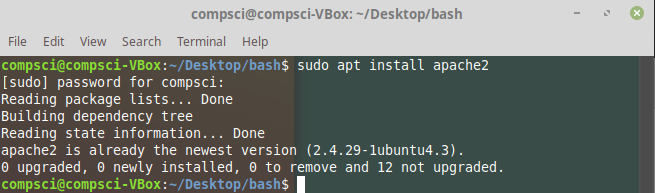
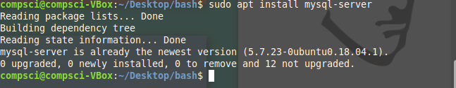
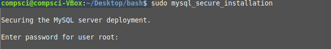
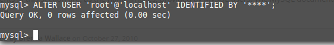
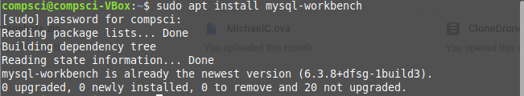
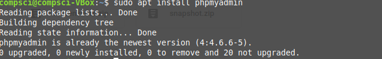
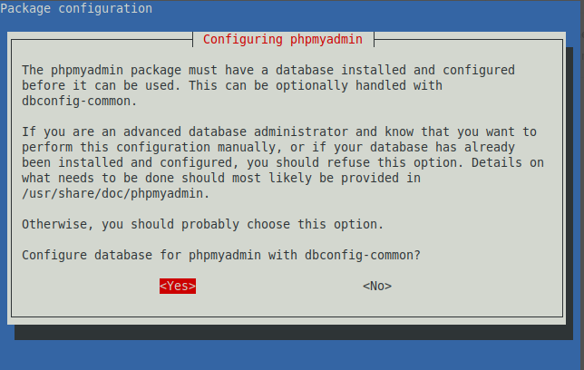
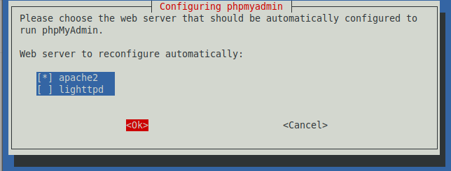

| First I installed apache2 so that I could have a server for mysql to attach to. |  |
| Then I installed mysql-server. |  |
| Then I had to go through and fully install mysql through their secure installation. The prompts that followed were answered by my teacher. |  |
| However, the password for root wasn't wanting to be set. That's why we had to go in as SUDO and reset the password of root where the *'s are the password |  |
| After that I went on to install mysql-workbench in order to create ERD's |  |
| Next up on the install list was phpmyadmin. |  |
| This one was a lot of prompts but my teacher told us what to use and what not to click on. |  |
| The big thing for this prompt is to hit space when selecting apache2, then hitting enter. |  |